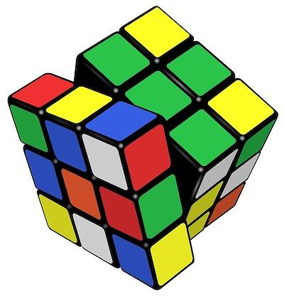
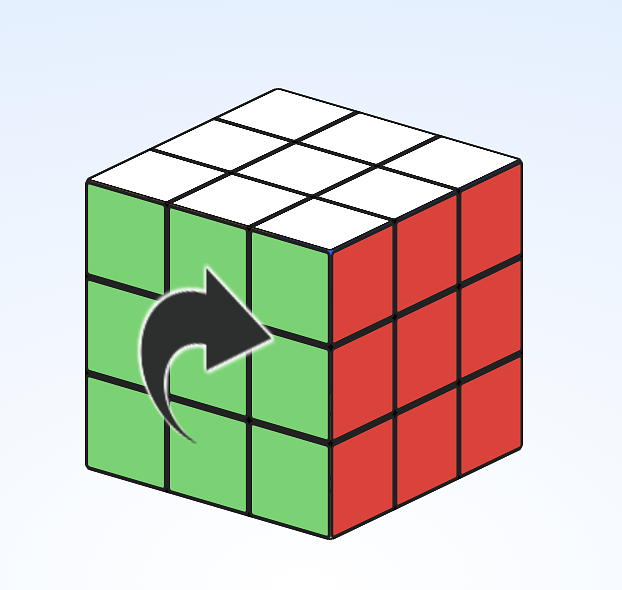
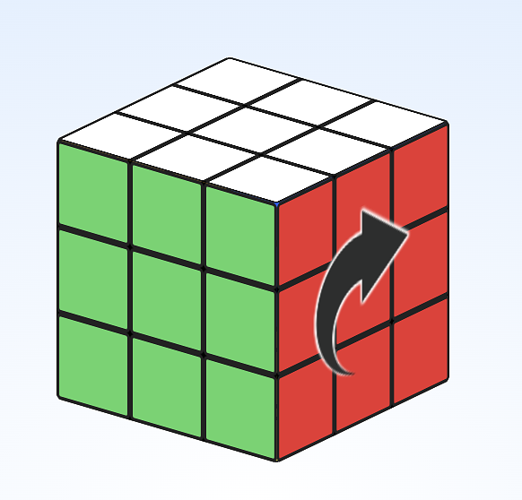
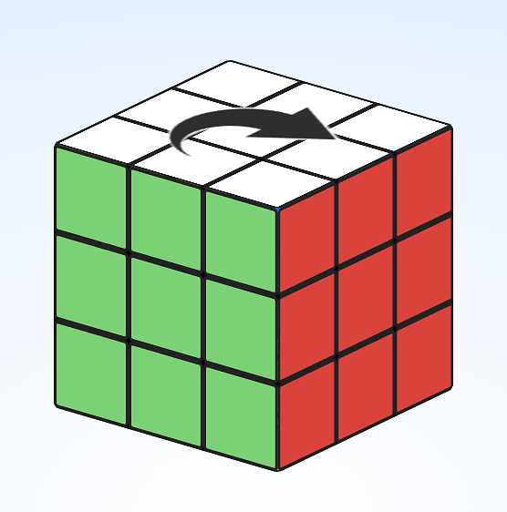
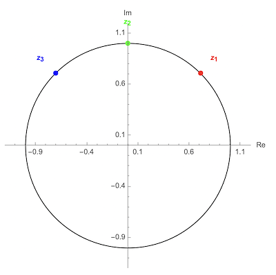

Group Theory, Rubik's Cubes, and the Standard Model
105 page views
|
1345 words
|
What do algebra, Rubik's cubes and quantum theory have in common? Start with the Rubik's cube. It's easy to scramble the cube and lose track of how you got it into that state, but it's been proven that the 3x3x3 cube is always at most 20 moves away from solved. How would you even start to prove something like this?
What got me interested in abstract algebra was learning that the Rubik's cube was actually an example of a group. I had a serendipitous meeting with a future friend in Powell's Bookstore when I sold my laptop on Craigslist. He told me about the importance of group theory. Later the next year in college I took a group theory class and was struck by how abstract the definition of a group was. Apparently groups had something to do with symmetry, but here's what the book lead with:
Definition of a Group
a group is a set \( G \) together with a function \( * : G \times G \to G \) such that:
Identity: \( \exists e \in G : \forall a \in G: e * a = a * e = a \)
Associativity: \( \forall a,b,c \in G: a * (b * c) = (a * b) * c \)
Inverses: \( \forall a \in G: \exists b \in G: a * b = b * a = e \)
(\(\forall\) means "for all", and \(\exists\) means "there exists", and \(\in\) means "is in")
Okay, let's unpack this. Group theory is all about sets, with associative binary operations and unit elements (1. identity axiom). What's the intuition here? The main idea here is 3., inverses. Any operation that can be done in he group can be un-done in the group. This is the essence of symmetry, when operations can be undone in a clean way.
Rubik's cubes embody a group. Inverses are related the physical operation of undoing a symmetry.
Example: Rubik's Group
The Rubik's cube is a 3x3x3 puzzle with six colors, one for each face of the cube, the goal is to return the cube back to the state where each side has only a single color:

rubik.jpg55.3 KBIf you choose an orientation for the cube in 3D space, what is the minimum set of operations you would need to solve a cube? You will need one 90° twist for each of the 6 faces, so consider the set: $$\{F, B, U, D, L, R\}$$ for the Front, Back, Up, Down, Left and Right sides. Assume each twist is clockwise when looking at the face.

F (front clockwise twist)

R (right clockwise twist)

U (up clockwise twist)
These six operations generate the whole Rubik's group: $$\{F, B, U, D, L, R\}$$
Does it even satisfy the definition of a group? We can define \( I \) the identity by taking any of our six generators and applying it 4 times, the equivalent of a 360° rotation:
$$I = R^4$$
And this gives us a way to calculate the inverse. What's the inverse of R? Well, \(R * R^3 = I \) so \(R^3\) is an inverse. But wait! I just assumed associativity. We should prove that first.
Recall the associative law:
Associativity: \( \forall a,b,c \in G: a * (b * c) = (a * b) * c \)
If you want a rigorous proof that this holds for Rubik's moves, then check out this Harvard paper, because the moves are modeled as functions acting on a set, the associativity is inherited from the function composition operation.
So we have an identity, inverses and associativity, Rubik's moves form a group. You can use this group to study solutions to the Rubik's cube, but I am more interested in reality than a fun puzzle cube. Luckily, group theory is essential to understand the Standard Model of particle physics. How?
The Standard Model of Particle Physics
This section will take what we've learned about groups and then apply it to physics. If you read anything about particle physics you might have seen an expression like:
$$U(1) \times SU(2) \times SU(3)$$
The Standard Model follows from the symmetries represented in this group structure. So what does this mean?
Let's start with \(U(1)\), what is it? This is the symmetry group of electromagnetism. Specifically, for QED, the quantum field theory of electromagnetism and light. Without getting too deep into the weeds, a quantum field is a function that assigns an operator to every point in spacetime. So, \( \hat\phi(x) \) is an operator, and \(x = (t, \vec{x})\).
Quantum fields are functions that assign an operator to a point \(x = (t, \vec{x})\) in spacetime:
$$\hat\phi(x) \larr \text{ an operator}$$
The operator \(\hat\phi(x)\) operates on a Hilbert space. A Hilbert space is a vector space used to represent particle states in quantum mechanics. So the value of \(\hat\phi(x) \) acts on the Hilbert space. But we don't need to get into Hilbert spaces and what they mean, this is just for the curious reader. The point is to talk about symmetry groups.
The field \(\hat\phi(x)\) can be locally transformed by any element of \(U(1)\) and the physics won't change. No other transformations have this property. It turns out that this symmetry characterizes the field \(\hat\phi(x)\).
What does \(U(1)\) look like? Can we build intuition about it? \(U(1)\) looks like a circle, and the points on the circle can be multiplied together to get other points on the circle. There are a few ways to do this, but my favorite uses complex numbers.
We can define \(U(1)\) using complex numbers:
$$ U(1) = \{ x + i y : x^2 + y^2 = 1 \} $$
The equation \(x^2 + y^2 = 1\) defines a circle, and an example of the group operation would be the picture below, where \(\textcolor{red}{z_1} * \textcolor{green}{z_2} = \textcolor{blue}{z_3} \)

U1.png45.6 KBSo the above circle is a set of uncountably many (see post on transfinite numbers) complex numbers, all at distance 1 from the center. You can make an equivalent definition using the polar representation of complex numbers:
$$ U(1) = \{ e^{i \theta} \} $$
Then \(e^{\theta_1}*e^{\theta_2} = e^{\theta_1 + \theta_2} \) is just the addition of the angles. Group structure? Let's see, set \(\theta = 0\) then \(e^0 = 1\), so it has an identity. Since U(1) are complex numbers, multiplication is associative. Now inverses, the inverse of \(e^\theta\) is \(e^{-\theta}\), so we are done, \(U(1)\) is a group.
The group uniquely determines the properties of the quantum field theory for electromagnetism. The sheer variety and utility of groups is something that spans everything from silly games to the foundations of physics. For now I will avoid getting into \(SU(2)\) and \(SU(3)\), because they are harder to visualize and I don't think it would help with this article. This article was meant to introduce an important structure that can be employed in any problem that involves symmetry.
Groups come in many sizes and forms. The Rubik's group is finite (but very large to us earthlings, which will be apparent to anyone who has tried solving a Rubik's cube. The group \(U(1)\) is infinite, in fact, it's uncountably infinite, but also easy to visualize, and it represents local symmetries, where the transformation is infinitesimal.
There is so much more to group theory and to physics, but I am going to leave it here for now so I can get to topological spaces and homotopy.